CALACATTA
Blancos puros con vetas esculturales.
Calacatta para espacios de alto diseño donde la geometría suave y la nobleza del material crean un contorno sofisticado.
Superficie de protagonismo controlado, ideal para proyectos residenciales de lujo y arquitectura contemporánea.
Muestrario de Colores

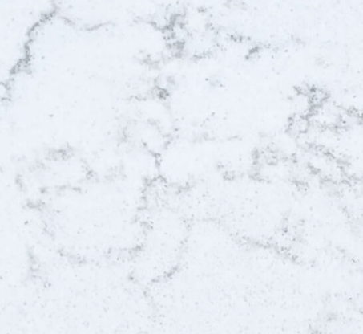
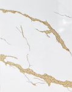
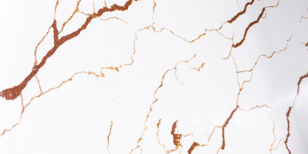
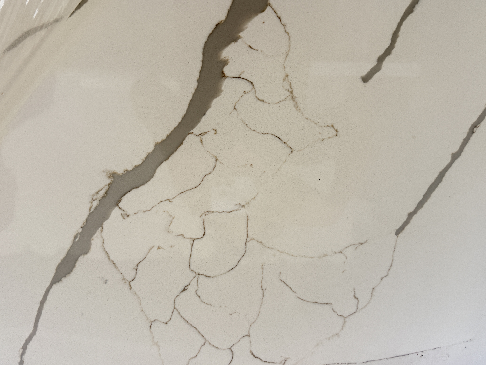
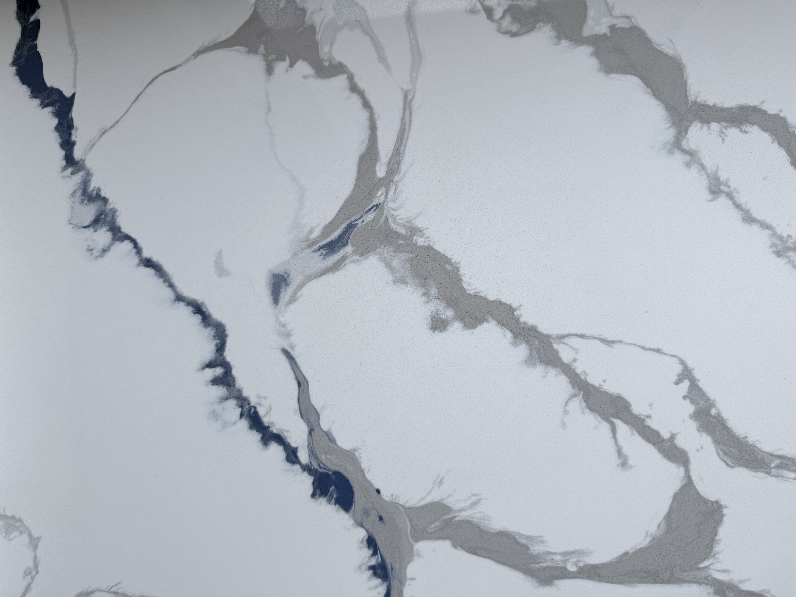
Proyectos Terminados
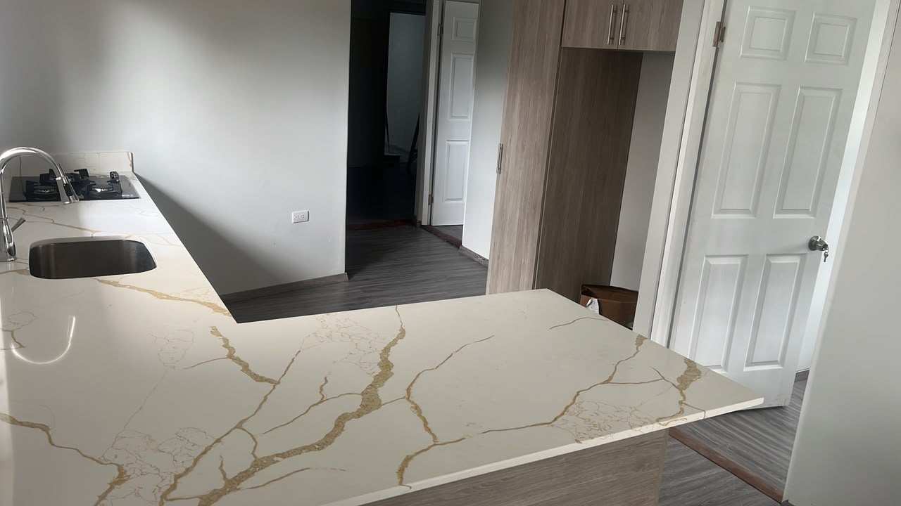
Encimera principal
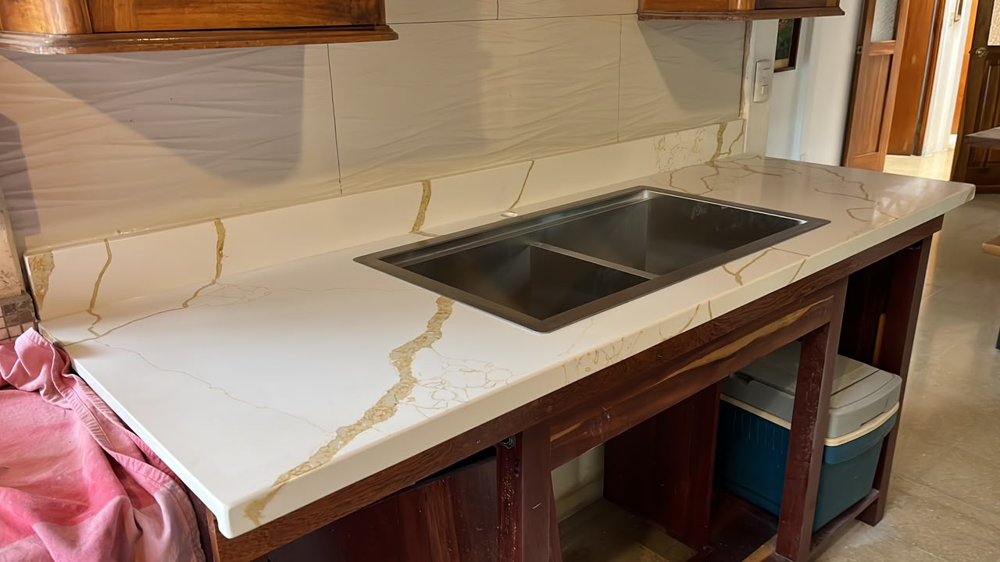
Lavatorio principal

Cocina principal
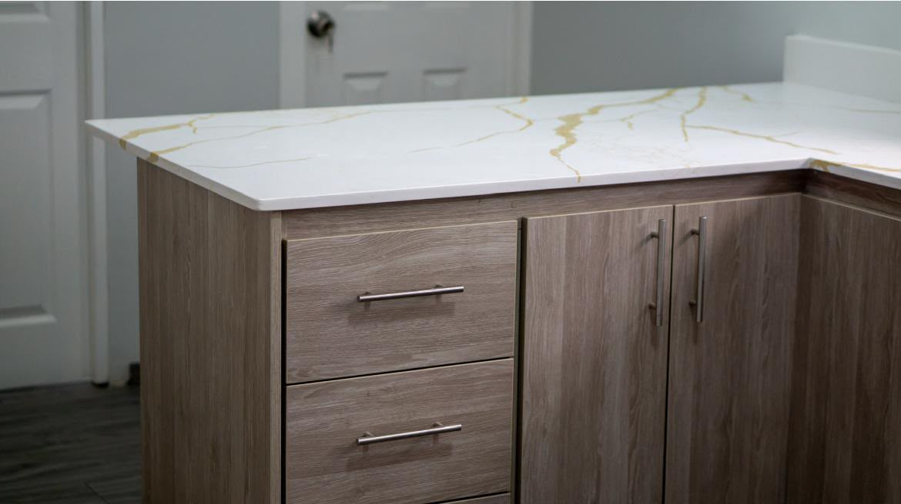
Acabados profesionales
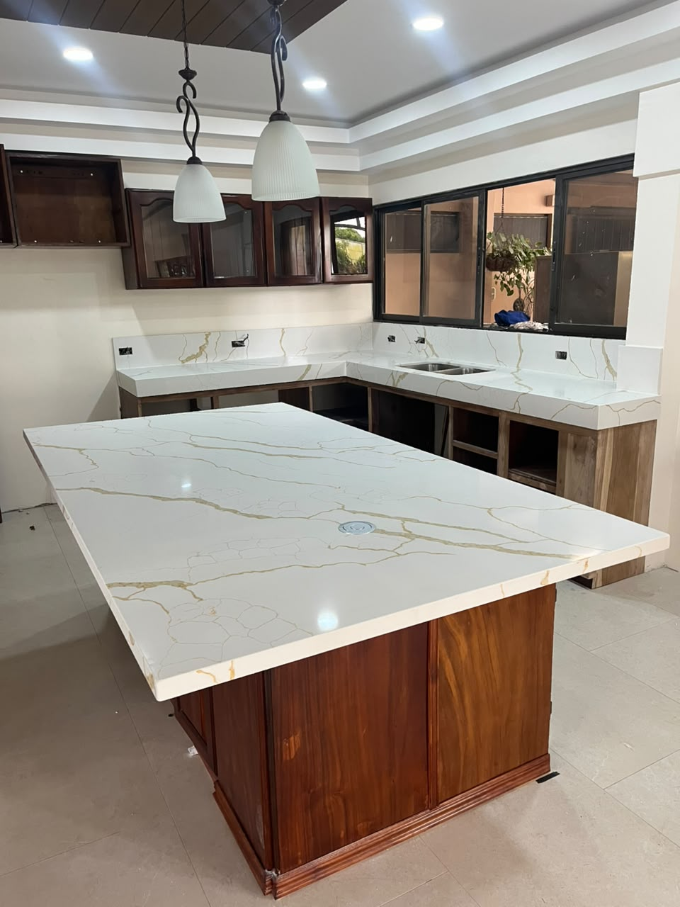
Isla amplia

Cocina
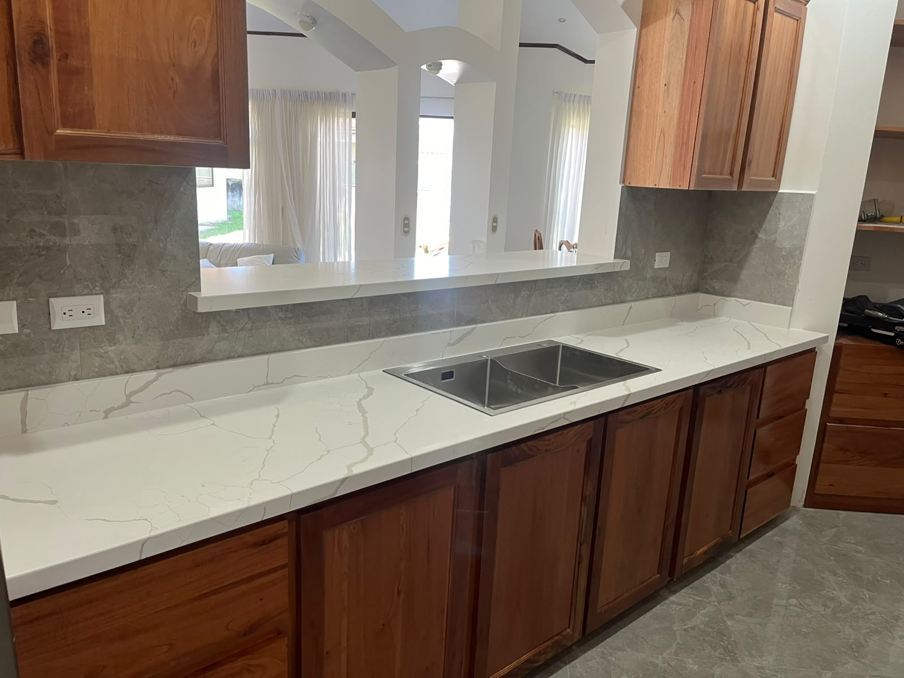
Cocina
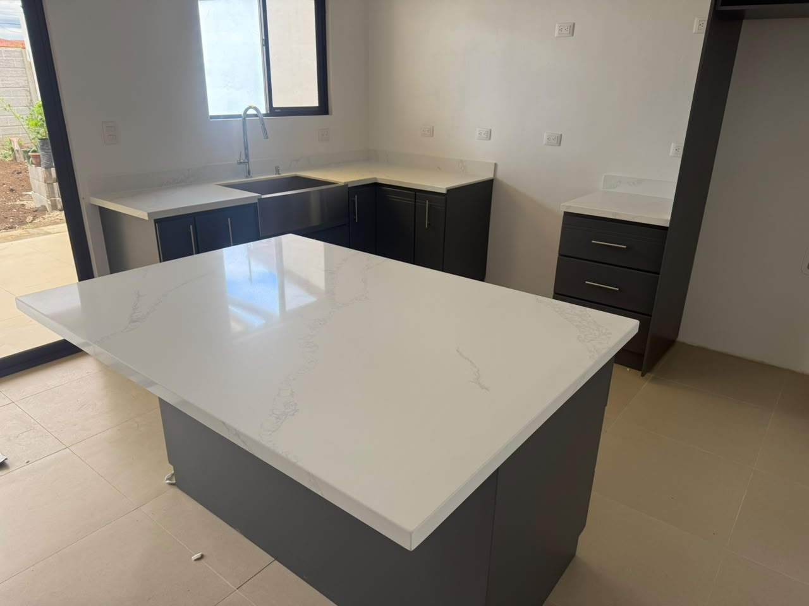
Isla Amplia
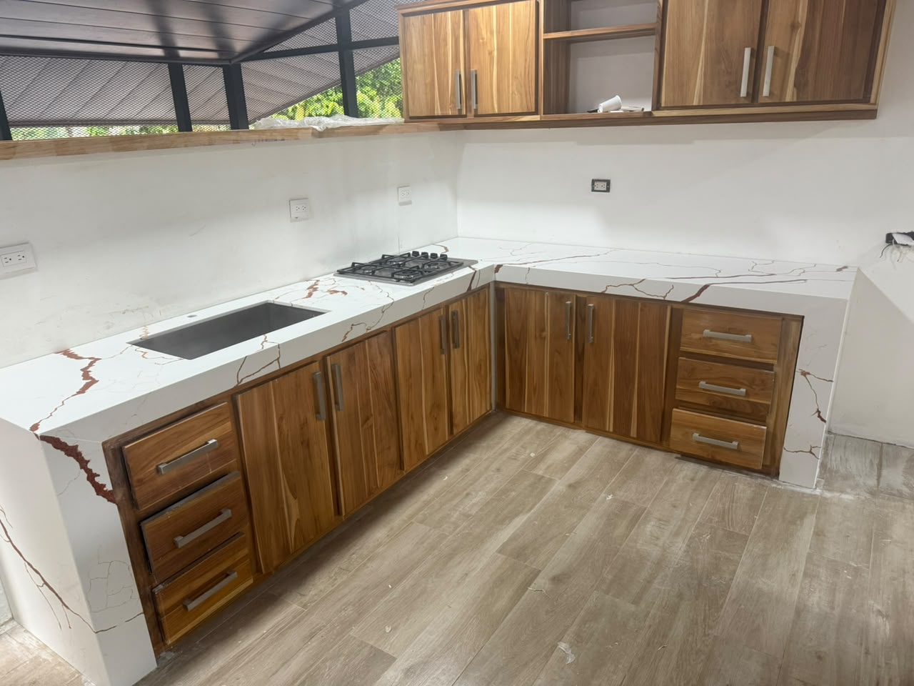
Cocina Principal